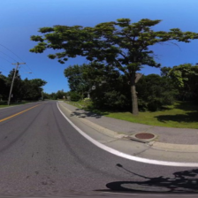
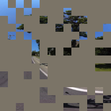
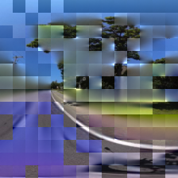
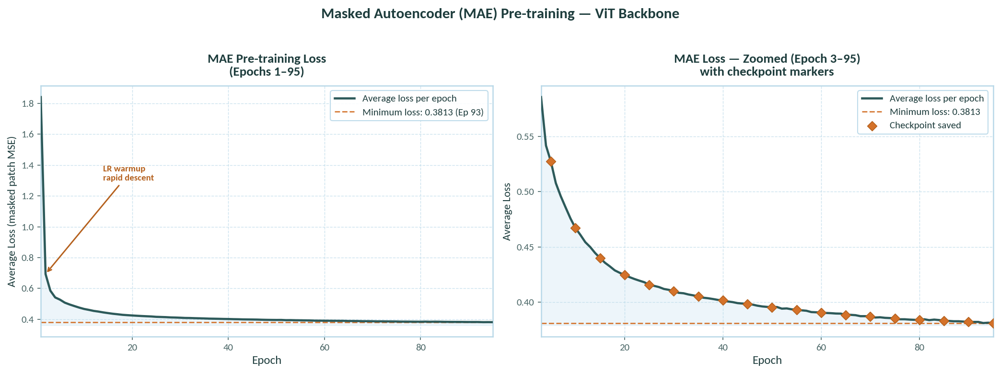
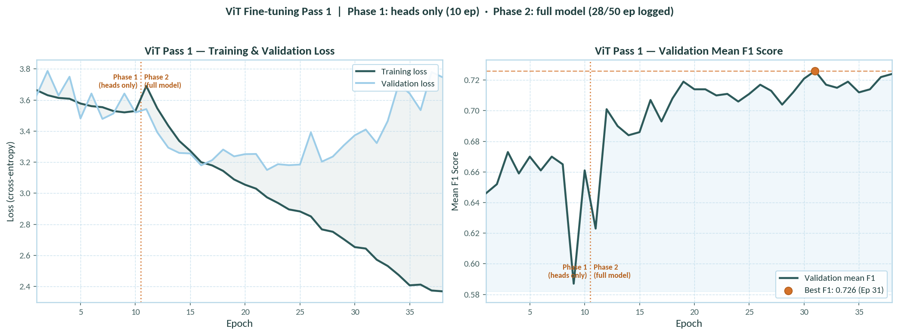
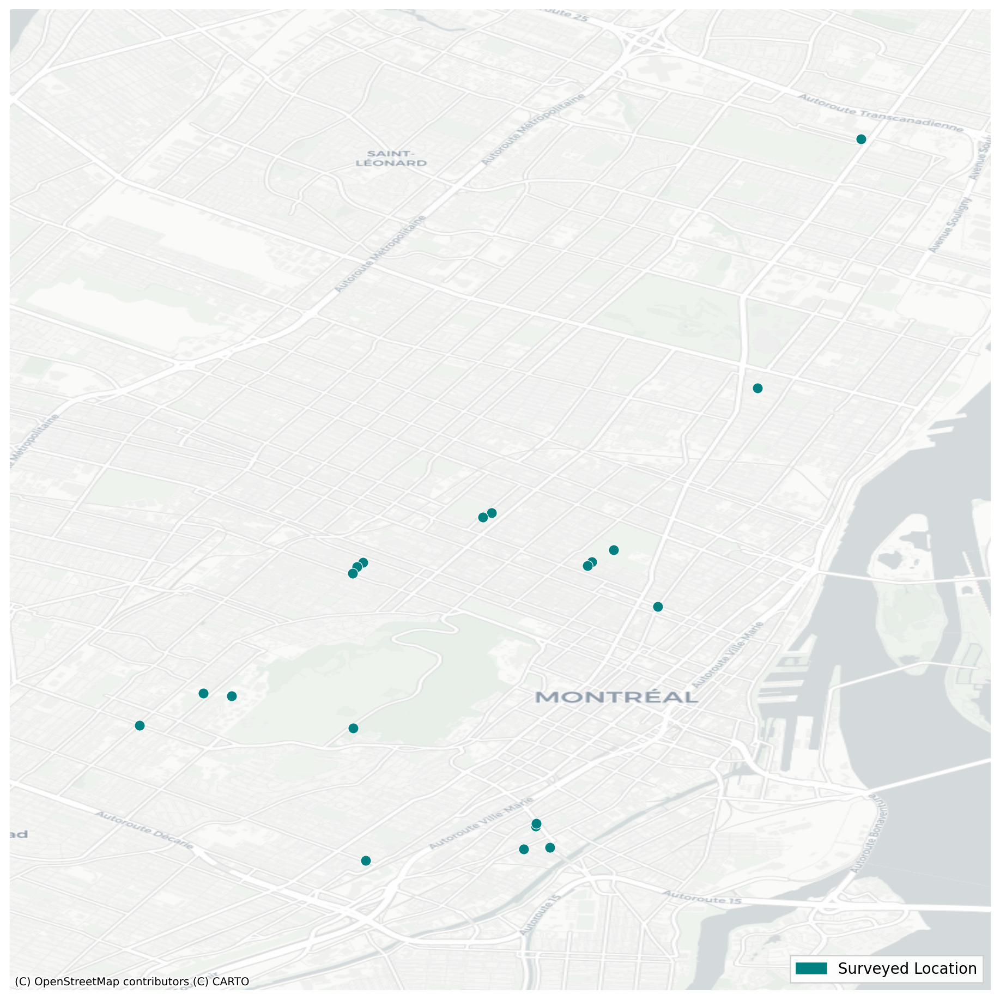

ML Pipeline
From raw street images to a deployed accessibility classifier. We worked on dataset creation, self-supervised pre-training, supervised fine-tuning, and VLM validation.
Pipeline at a Glance
Four stages, built sequentially with each one feeding the next. No existing dataset existed for this task at this scale, so we built everything from scratch.
Image Collection via Mapillary
~14,000 Montreal locations sampled near transit stations and across the island. Images stored with latitude, longitude, and view angle metadata.
AI Labelling with Gemini 2.5 Flash
Each image rated by Gemini for six mobility aid types on a 0–4 scale. 42,342 rows generated programmatically as manual labelling at this scale was infeasible.
Label Calibration & Binarization
AI-generated scores recalibrated to match human survey distributions, then binarized into accessible/inaccessible labels.
MAE Pre-Training
A Vision Transformer was pre-trained on ~69,000 unlabelled street images from Montreal, Chicago, and Seattle (via Project Sidewalk and Mapillary) using Masked Autoencoder methodology. It was pre-trained for 95 epochs, with final reconstruction loss being 0.38.
ViT Fine-Tuning (6 Passes)
Six rounds of supervised fine-tuning on the labelled dataset. Pass 1 selected for deployment: mean F1 is 72.6% and validation accuracy is 76.1%.
VLM Validation Study
Correlation study comparing three vision-language models against human ground truth for 18 Montreal locations.
Dataset Creation
The full dataset story, including image collection via Mapillary, AI labelling with Gemini 2.5 Flash, label calibration our community ground-truth survey, is documented on the Dataset page.
Masked Autoencoder (MAE) Pre-Training
Before fine-tuning for accessibility classification, the model was pre-trained on ~69,000 unlabelled street images from Montreal, Chicago, and Seattle (sourced via Project Sidewalk and Mapillary) using self-supervised Masked Autoencoder methodology, giving it a head start on the visual features that matter for sidewalk accessibility assessment.
A ViT pre-trained on ImageNet learns general visual features but has no specific knowledge of street-level images, sidewalk surfaces, kerbs, ramps, or urban geometry. MAE pre-training on ~69,000 unlabelled street images from Montreal, Chicago, and Seattle addresses this by teaching the model to reconstruct masked patches, a self-supervised task that forces learning of domain-relevant structure without any labels.
The MAE encoder (~85M parameters of a Vision Transformer-Base architecture) was then used as the backbone initialisation for all subsequent supervised fine-tuning passes and replaced the standard ImageNet starting point.



Training Configuration
| Parameter | Value |
|---|---|
| Training data | ~69,000 unlabelled street images from Montreal, Chicago, and Seattle (via Project Sidewalk and Mapillary) |
| Target epochs | 200 |
| Completed epochs | 95 (halted due to time and compute credit constraints) |
| Steps per epoch | 975 |
| Approximate time per epoch | 536–553 seconds (~9 minutes) |
| Checkpoint frequency | Every 5 epochs to Google Drive |
| Optimisation target | Masked patch reconstruction loss (MSE) |
Training Loss Curve
The rapid early drop from 1.84 to 0.47 in the first 10 epochs reflects fast acquisition of low-level visual structure. The continued slow decrease through epoch 95 indicates progressive refinement of higher-level representations. The model was halted at 95 epochs due to time and compute credit constraints; further training would likely improve ViT performance.
| Epoch | Reconstruction Loss |
|---|---|
| 1 | 1.8415 |
| 10 | 0.4671 |
| 20 | 0.4159 |
| 30 | 0.4043 |
| 40 | 0.4000 |
| 50 | 0.3956 |
| 60 | 0.3926 |
| 70 | 0.3896 |
| 80 | 0.3858 |
| 90 | 0.3824 |
| 95 (final) | 0.3813 |

Vision Transformer Fine-Tuning
Six rounds of supervised fine-tuning on the MAE-pre-trained encoder, using ~31,000 labelled Montreal images. Pass 1 was selected for the production application, achieving the best balance of accuracy and per-class performance.
Fine-Tuning Architecture
All six passes used a two-phase training strategy:
| Phase | Trainable Parameters | Description |
|---|---|---|
| Phase 1 — Heads Only | ~1.19M | Classification heads only. Encoder weights frozen. Allows new layers to align with pre-trained representations before any disruptive full-model updates. |
| Phase 2 — Full Model | ~87.0M | Entire model (encoder + classification heads) trained end-to-end. Allows the encoder to adapt its representations specifically for accessibility classification. |
The classification head outputs a binary prediction (accessible / inaccessible) for each of the six mobility aid types independently creating six parallel binary classifications from a single image forward pass.
Evaluation Metrics
- Validation Accuracy: Overall fraction of correct binary predictions across all classes and images in the validation set.
- Mean F1 Score: Macro-averaged F1 across all six mobility aid classes. Preferred over accuracy given class imbalances as it balances precision and recall for both accessible and inaccessible predictions.
Pass-by-Pass Summary
| Pass | Best Val Mean F1 | Best Val Accuracy | Key Changes |
|---|---|---|---|
| Pass 1 ★ (Deployed) | 72.6% | 76.1% | Baseline: MAE encoder weights, standard dropout (0.2), lr=1e-5 Phase 2, all 6 output heads |
| Pass 2 | 66.9% | — | Added label smoothing (0.1), increased dropout (0.2→0.35), reduced lr in Phase 2 |
| Pass 3 | 64.1% | — | Added weighted random sampling to address walker class imbalance |
| Pass 4 | 68.5% | ~79.5% | Removed walker class head; removed weighted sampling; dropout back to 0.2 |
| Pass 5 | 65.1% | — | Downsampled majority classes in training data |
| Pass 6 | 60.8% | — | Added more data, changed walker threshold, no downsampling |
Why Pass 1 Over Later Passes?
Pass 4 achieved a higher validation accuracy (~79.5%) but a lower mean F1 (68.5%) — and removed the walker class entirely. Since mean F1 better captures balanced performance across all classes (including the imbalanced walker class), Pass 1 was selected as the most comprehensively performant model. Later passes showed that aggressive regularisation and data manipulation tended to hurt rather than help, suggesting the MAE encoder already provided strong generalisation.
Pass 1 — Detailed Results
Phase 1: Classification Heads Only
| Trainable parameters | 1,187,334 (~1.19M) |
| Epochs run | 10 |
| Best epoch | 3 |
| Best val mean F1 | 0.673 |
Phase 2: Full Model Fine-Tuning
| Trainable parameters | 87,012,870 (~87.0M) |
| Epochs run | 50 |
| Best epoch | 21 |
| Best val mean F1 | 0.726 |
| Best val accuracy | 76.1% |
| Per-class F1 range | ~0.70–0.75 |
Per-Class F1 Scores (Pass 1, Phase 2, Best Epoch)
| Mobility Aid Type | Approximate F1 Score |
|---|---|
| Manual wheelchair | ~0.72 |
| Electric wheelchair | ~0.73 |
| Walker | ~0.70 |
| Walking cane | ~0.73 |
| Mobility scooter | ~0.74 |
| Mobility impairment, no aid | ~0.75 |

VLM Validation Study
How well do Vision-Language Models agree with human accessibility judgements? We ran a formal correlation study to find out — and used the findings to inform our label quality controls.
A key scientific question in this project: if we used Gemini to generate training labels, how well do Gemini's outputs correlate with what human raters would actually say? This matters both as validation of our label quality and as evidence for or against VLM-based accessibility assessment in general.
The team conducted a correlation study comparing three VLMs against human survey scores from 18 real-world Montreal locations.

Study Design
| Parameter | Details |
|---|---|
| Reference scores | Human survey ratings for electric wheelchair accessibility |
| Locations tested | 18 Montreal locations |
| VLMs evaluated | Gemma 3 4B, Qwen2-VL-2B, Gemini 2.5 Flash |
| Statistical tests | Spearman rank correlation, Pearson r, Kendall's τ |
| Significance threshold | α = 0.05 |
Results
| Model | Spearman ρ | Pearson r | Kendall τ | Significant? |
|---|---|---|---|---|
| Gemma 3 4B | −0.055 (p=0.828) | −0.080 (p=0.753) | −0.049 (p=0.820) | No |
| Qwen2-VL-2B | +0.331 (p=0.180) | +0.277 (p=0.266) | +0.295 (p=0.173) | No |
| Gemini 2.5 Flash | +0.190 (p=0.451) | +0.173 (p=0.493) | +0.160 (p=0.450) | No |
Interpreting the Results
None of the three VLMs showed statistically significant correlation with human survey scores at α=0.05 — but the key point is why: with n=18 locations, the study is fundamentally underpowered. Detecting a moderate correlation (Spearman ρ≈0.3) requires approximately n=55 for 80% statistical power. Non-significance does not mean zero correlation but means we had insufficient data to confirm or deny one.
Qwen2-VL-2B showed the strongest positive correlation (ρ=0.331), suggesting it may have the best alignment with human perception among those tested. Gemini 2.5 Flash showed moderate positive correlation (ρ=0.190), consistent with partial validity of the labels it generated. Gemma 3 4B showed near-zero correlation, suggesting poor alignment.
We used this finding to motivate our label recalibration methodology: rather than trusting raw Gemini scores, we z-score normalised them to match the human survey distribution before binarizing. This ensures our binary labels reflect human-calibrated thresholds, not raw model outputs.
Next: How the ML pipeline powers the routing application
The Application →